This specification defines a core subset of Mathematical Markup
Language, or MathML, that is suitable for browser implementation.
MathML is a markup language for describing mathematical notation
and capturing both its structure and content. The goal of MathML is to
enable mathematics to be served, received, and processed on the World
Wide Web, just as HTML has enabled this functionality for text.
Introduction
The [[MATHML3]] specification has several shortcomings that make it
hard to implement consistently across web rendering engines or to
extend with user-defined constructions, e.g.:
It is a huge and standalone specification.
It does not contain any detailed rendering rules.
It is not driven by browser-implementation.
It lacks automated testing.
This MathML Core specification intends to address these issues by
being as accurate as possible on the visual rendering of mathematical
formulas using additional rules from the TeXBook’s Appendix G
[[?TEXBOOK]] and from the Open Font Format [[OPEN-FONT-FORMAT]],
[[OPEN-TYPE-MATH-ILLUMINATED]]. It also relies on modern browser
implementations and web technologies [[HTML]] [[SVG]] [[CSS2]] [[DOM]],
clarifying interactions
with them when needed or introducing new low-level primitives to
improve the web platform layering.
Parts of MathML3 that do not fit well in this framework or are less
fundamental have been omitted. Instead, they are described in a
separate and larger [[MATHML4]] specification. The details of which
math feature will be included in future versions of MathML Core or
implemented as polyfills is still open. This question and other
potential improvements are tracked on GitHub.
By increasing the level of implementation details, focusing on a
workable subset, following a browser-driven design and relying on
automated web platform tests, this specification is expected to
greatly improve MathML interoperability. Moreover, effort on MathML
layering will enable users to implement the rest of the MathML 4
specification, or more generally to extend MathML Core, using
modern web technologies such as
shadow trees,
custom elements or
APIs from [[HOUDINI]].
MathML Fundamentals
Elements and attributes
The term MathML element refers to any element in the
MathML namespace.
The MathML elements defined in this specification are called the
MathML Core elements and are listed below.
Any MathML element that is not listed below is called an
Unknown MathML element.
[^annotation^]
[^annotation-xml^]
[^maction^]
[^math^]
[^merror^]
[^mfrac^]
[^mi^]
[^mmultiscripts^]
[^mn^]
[^mo^]
[^mover^]
[^mpadded^]
[^mphantom^]
[^mprescripts^]
[^mroot^]
[^mrow^]
[^ms^]
[^mspace^]
[^msqrt^]
[^mstyle^]
[^msub^]
[^msubsup^]
[^msup^]
[^mtable^]
[^mtd^]
[^mtext^]
[^mtr^]
[^munder^]
[^munderover^]
[^semantics^]
The grouping elements are
[^maction^],
[^math^],
[^merror^],
[^mphantom^],
[^mprescripts^],
[^mrow^],
[^mstyle^],
[^semantics^] and unknown MathML elements.
The scripted elements are
[^mmultiscripts^],
[^mover^],
[^msub^],
[^msubsup^],
[^msup^],
[^munder^] and
[^munderover^].
The radical elements are
[^mroot^] and [^msqrt^].
The attributes defined in this specification have no namespace
and are called MathML attributes:
MathML specifies a single top-level or root
math element, which encapsulates each
instance of MathML markup within a document. All other MathML content
must be contained in a <math> element.
The <math>
element accepts the attributes described
in as well as the
following attributes:
[^math/display^]
[^math/alttext^]
The
display
attribute, if present,
must be an
ASCII case-insensitive
match
to block or inline.
The user agent stylesheet
described in
contains rules for this attribute that affect the
default values for the [^math/display^]
(block math or inline math)
and math-style
(normal or compact) properties.
If the display
attribute is absent or has an invalid value, the User Agent
stylesheet treats it the same as inline.
This specification does not define any observable behavior that is
specific to the alttext attribute.
The [^math/alttext^] attribute may be used as
alternative text by some legacy systems that do not
implement math layout.
If the <math> element does not have its computed
[^math/display^] property equal to
block math or inline math
then it is laid out according to the CSS specification where
the corresponding value is described.
Otherwise the layout algorithm of the
[^mrow^] element is used to produce a
math content box. That math content box is used as the content for the layout of
the element, as described by CSS for display: block
(if the computed value is block math) or
display: inline
(if the computed value is inline math).
Additionally, if the computed
[^math/display^] property is equal to
block math then that math content box is rendered
horizontally centered within the content box.
TEX's display mode $$...$$
and inline mode $...$ correspond to
display="block" and display="inline"
respectively.
In the following example, a [^math^] formula
is rendered in display mode on a new line and taking full width,
with the math content centered within the container:
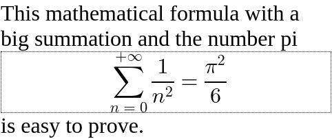
As a comparison, the same formula would look as follows in
inline mode. The formula is embedded in the paragraph of text
without forced line breaking.
The baselines specified by the layout algorithm of the
[^mrow^] are used for vertical
alignment. Note that
the middle of sum and equal symbols or fractions are all aligned,
but not with the alphabetical baseline of the surrounding
text.
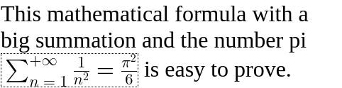
Because good mathematical rendering requires use of mathematical
fonts, the
user agent stylesheet
should set the
font-family
to the
math
value on the <math> element instead of inheriting
it. Additionally, several CSS properties that can be set on
a parent container such as
font-style, font-weight,
direction or text-indent etc
are not expected to apply to the math formula and so the
user agent stylesheet
has rules to reset them by default.
Types for MathML Attribute Values
In addition to CSS data types, some MathML attributes rely on the following MathML-specific types:
unsigned-integer
An
<integer> value as defined in
[[CSS-VALUES-4]], whose first character is neither
U+002D HYPHEN-MINUS character (-) nor
U+002B PLUS SIGN (+).
The
id,
class,
style,
data-*,
nonce and
tabindex
attributes have the same syntax and semantics as defined for
[^global/id^],
[^global/class^],
[^html-global/style^],
data-*,
[^htmlsvg-global/nonce^] and
[^htmlsvg-global/tabindex^]
attributes on HTML elements.
The
dir
attribute, if present,
must be an
ASCII case-insensitive match
to ltr or rtl.
In that case, the user agent is expected to treat the attribute as a
presentational hint setting the element's
direction
property to the corresponding value.
More precisely, an
ASCII case-insensitive match
to rtl is mapped to rtl while
an ASCII case-insensitive match to ltr is mapped to ltr.
The dir attribute is used to set the directionality of math
formulas, which is often rtl in Arabic speaking world.
However, languages written from right to left often embed math
written from left to right and so the
user agent stylesheet resets
the
direction
property accordingly on the [^math^]
elements.
In the following example, the dir attribute
is used to render "𞸎 plus 𞸑 raised to the power of
(٢ over, 𞸟 plus ١)" from right-to-left.
The
mathcolor
and
mathbackground
attributes, if present, must
have a value that is a
<color>.
In that case, the user agent is expected to treat these attributes as a
presentational hint setting the element's
color and
background-color
properties to the corresponding values.
The mathcolor attribute describes the foreground fill
color of MathML text, bars etc
while the mathbackground
attribute describes the background color of an element.
The
mathsize
attribute, if present, must
have a value that is a valid <length-percentage>.
In that case, the user agent is expected to treat the attribute as a
presentational hint setting the element's
font-size
property to the corresponding value.
The mathsize property indicates the desired height
of glyphs in math formulas but also scales other parts (spacing, shifts,
line thickness of bars etc) accordingly.
The above attributes are implemented for compatibility with full MathML. Authors whose only target is MathML Core are encouraged to use CSS for styling.
The displaystyle and scriptlevel attributes
The
displaystyle
attribute, if present, must have a value that is a boolean.
In that case, the user agent is expected to treat the attribute as a
presentational hint setting the element's
math-style
property to the corresponding value.
More precisely, an
ASCII case-insensitive match
to true is mapped to normal while
an ASCII case-insensitive match to false is mapped to compact.
This attribute indicates whether formulas should try to minimize
the logical height (value is false) or not
(value is true) e.g. by changing the size of content or
the layout of scripts.
The
scriptlevel
attribute, if present, must have value
+<U>, -<U> or <U>
where <U> is an
unsigned-integer.
In that case
the user agent is expected to treat the scriptlevel
attribute as a
presentational hint setting the element's
math-depth
property to the corresponding value.
More precisely,
+<U>, -<U> and
<U>
are respectively mapped to
add(<U>)add(<-U>)
and <U>.
displaystyle and scriptlevel values
are automatically adjusted within MathML elements.
To fully implement these attributes, additional CSS properties must be
specified in the user agent stylesheet
as described in .
In particular, for all MathML elements a default
font-size: math is specified to ensure that
scriptlevel changes are taken into account.
In this example, an [^munder^]
element is used to attach a
script "A" to a base "∑". By default, the summation
symbol is rendered with the font-size inherited from its
parent and the A as a scaled down subscript.
If displaystyle is true, the summation symbol is drawn
bigger and the "A" becomes an underscript.
If scriptlevel is reset to 0 on the "A", then it will
use the same font-size as the top-level math root.
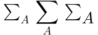
TEX's \displaystyle, \textstyle,
\scriptstyle, and \scriptscriptstyle correspond
to displaystyle and scriptlevel as
true and 0,
false and 0,
false and 1,
and false and 2, respectively.
Attributes Reserved as Valid
The attributes
intent and arg
are reserved as valid attributes.
This specification does not define any observable behavior that is
specific to the intent and arg attributes.
These attributes are described in [[MATHML4]] and
future versions of this specification may or may not
define them. Authors should be aware that they are currently
in development and subject to change.
When evaluating the SVG [^svg/requiredExtensions^]
attribute, user agents must claim support for the language extension
identified by the
MathML namespace.
In this example, inline MathML and SVG elements are used inside
an HTML document. SVG elements <switch> and
<foreignObject> (with
proper <requiredExtensions>) are used to
embed a MathML formula with a text fallback, inside a diagram.
HTML input element is used within the
[^mtext^]
to include an interactive input field inside a mathematical
formula.
Any
phrasing content
can be used inside
[^mi^],
[^mo^],
[^mn^],
[^ms^] and
[^mtext^]
elements.
The <svg> element can be used inside
[^annotation-xml^] elements.
Any flow content
can be used inside
[^annotation-xml^] elements with
encoding
application/xhtml+xml or text/html.
CSS styling
User agents must support various CSS features mentioned in this
specification, including new ones described in
.
They must follow the computation rule for
display: contents.
In this example, the MathML formula inherits the CSS color of its
parent and uses the font-family specified via the
style attribute.
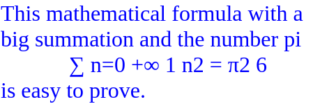
All documents containing MathML Core elements must include
CSS rules described in
as part of user-agent level style sheet defaults.
In particular, this adds !important rules to force
writing mode
to horizontal-lr on all MathML elements.
The float
property does
not create floating of elements whose parent's computed
display value is
block math or inline math,
and does not take them out-of-flow.
The following CSS features are not supported and must be ignored:
Line breaking inside math formulas:
white-space
is treated as nowrap on all MathML elements.
Alignment properties:
align-content, justify-content,
align-self, justify-self have
no effects on MathML elements.
These features might be handled in future versions of this document.
For now, authors are discouraged from setting a different value for
these properties as that might lead to backward incompatibility
issues.
DOM and JavaScript
User agents supporting
Web application APIs
must ensure that they keep the visual rendering of MathML
synchronized with the [[DOM]] tree, in particular perform necessary
updates when MathML attributes are modified dynamically.
All the nodes representing MathML elements in the DOM
must implement, and expose to scripts, the following
MathMLElement interface.
The {{GlobalEventHandlers}} and
HTMLOrForeignElement
interfaces are defined in [[HTML]].
Because math fonts generally contain very tall glyphs such as big
integrals, using typographic metrics is important to avoid
excessive line spacing of text. As a consequence,
user agents must take into account the USE_TYPO_METRICS flag from
the OS/2 table [[OPEN-FONT-FORMAT]] when performing text layout.
Focus
MathML provides the ability for authors to allow for
interactivity in supporting interactive user agents
using the same concepts, approach and guidance to
Focus
as described in HTML, with modifications or
clarifications regarding application
for MathML as described in this section.
When an element is focused, all applicable CSS
focus-related pseudo-classes as defined in
Selectors Level 3
apply, as defined in that specification.
The contents of embedded [^math^] elements
(including HTML elements inside token elements)
contribute to the sequential focus order of the containing owner HTML
document (combined sequential focus order).
Presentation Markup
Visual formatting model
Box Model
The default [^math/display^] property
is described in :
For the <math> root,
it is equal to inline math or block math
according to the value of the [^math/display^] attribute.
For Tabular MathML elements
[^mtable^],
[^mtr^],
[^mtd^] it is respectively equal to
inline-table,
table-row and
table-cell.
For all but the first children of the [^maction^]
and [^semantics^] elements, it is equal to
none.
For all the other MathML elements it is equal
to block math.
In order to specify math layout in different
writing modes,
this specification uses concepts from [[CSS-WRITING-MODES-4]]:
Unless specified otherwise,
the figures in this specification use a
writing mode
of horizontal-lr and ltr.
See ,
and
for examples of other
writing modes that are sometimes used for math layout.
Boxes used for MathML elements rely on several parameters in order to perform layout
in a way that is compatible with CSS but also to take into account
very accurate positions and spacing within math formulas:
The alphabetic baseline
which typically aligns with the bottom of uppercase Latin
glyphs. The algebraic distance from the
alphabetic baseline to the line-over edge of the box is called the
line-ascent. The algebraic distance from the
line-under edge to the alphabetic baseline of the box
is called the line-descent.
The mathematical baseline, also called
math axis, which typically aligns with the fraction
bar, middle of fences and binary operators. It is shifted away from the alphabetic baseline by AxisHeight towards the line-over.
The ink-over baseline, indicating the line-over
theorical limit of the math content drawn, excluding any
extra space.
If not specified, it is aligned with the line-over edge.
The algebraic distance from the alphabetic baseline to
the ink-over baseline is called the
ink line-ascent.
The ink-under baseline, indicating the line-under
theorical limit of the math content drawn, excluding any
extra space.
If not specified, it is aligned with the line-under edge.
The algebraic distance from the ink-under baseline
to the alphabetic baseline is called the
ink line-descent.
For math layout, it is very important to rely on the ink extent
when positioning text. This is not the case for more complex
notations (e.g. square root).
Although ink-ascent and ink-descent are defined for
all MathML elements they are really only used for the token
elements. In other cases, they just match normal ascent and
descent.
An optional italic correction
which provides a measure of how much the text of a box is
slanted along the inline axis.
See .
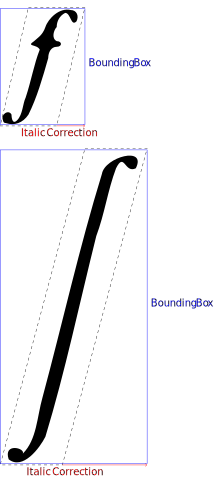
Examples of italic correction for italic f and large integral
If it is requested during calculation of
min-content inline size and
max-content inline size or during layout
then 0 is used as a fallback value.
An optional top accent attachment
which provides a reference offset on the
inline axis of a box that should be used when
positioning that box as an accent.
See .
Example of top accent attachment for a circumflex accent
If it is requested during calculation of
min-content inline size
(respectively max-content inline size) then half the
min-content inline size (respectively max-content inline size) is used as a
fallback value.
If it is requested during layout then half the
inline size of the box is used as a fallback value.
Given a MathML box, the following offsets are defined:
The inline offset of a child box
is the offset between the
inline-start edge of
the parent box and the
inline-start edge
of the child box.
The block offset of a child box
is the offset between the block-start edge of
the parent box and the
block-start edge
of the child box.
The line-left offset of a child box
is the offset between the line-left edge of
the parent box and the
line-left edge
of the child box.
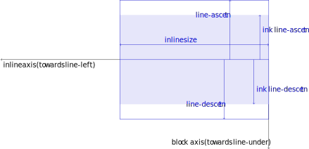
Box model for writing mode horizontal-tb and rtl that may be used in e.g. Arabic math.
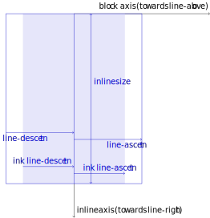
Box model for writing mode vertical-lr and ltr that may be used in e.g. Mongolian math.Box model for writing mode vertical-rl and ltr that may be used in e.g. Japanese math.
The position of child boxes and graphical items inside a MathML
box are expressed using the inline offset
and block offset.
For convenience, the layout algorithms may describe offsets using
flow-relative directions, line-relative directions or
the alphabetic baseline.
It is always possible to pass from one description to the other
because position of child boxes is always performed after the
metrics of the box and of its child boxes are calculated.
Here are examples of offsets obtained from line-relative
metrics:
Each MathML element has an associated math content box, which is
calculated as described in this chapter's layout algorithms using the following
structure:
The box metrics and offsets of the
padding box
are obtained from the
content box
by taking into account the corresponding
padding
properties as described in CSS.
The box metrics and offsets of the
border box
are obtained from the
padding box
by taking into account the corresponding
border-width
property as described in CSS.
The box metrics and offsets of the
margin box
are obtained from the
border box
by taking into account the corresponding
margin
properties as described in CSS.
Per the description above, margin-collapsing does not apply to MathML elements.
During box layout, optional
inline stretch size constraint and
block stretch size constraint parameters may be used on
embellished operators. The former indicates
a target size that a [=embellished operator/core operator=] stretched along
the inline axis should cover.
The latter indicates an ink line-ascent and ink line-descent
that a [=embellished operator/core operator=] stretched along the block axis
should cover.
Unless specified otherwise, these parameters are ignored during
box layout and child boxes are laid out without
any stretch size constraint.
Define what inline percentages resolve against
Define what block percentages resolve against
Anonymous <mrow> boxes
An anonymous box is a box without any associated
element in the DOM tree and which is generated for layout purpose
only. The properties of anonymous boxes are inherited from the
enclosing non-anonymous box while non-inherited properties have
their initial value.
An anonymous <mrow> box is
an anonymous box with display equal to
block math and which is laid out as
described in section .
If a MathML element
generates an anonymous <mrow> box if it wraps
in children in an anonymous <mrow> box i.e.
its subtree in the visual formatting model is made of an
anonymous <mrow> box
which itself contains the boxes associated to the children of this
MathML element.
In the following example, the [^math^] and
[^mrow^] elements are laid out as described in section
. In particular, the
<math> element adds proper spacing around its
<mo>≠</mo> child and the
<mrow> element stretches its
<mo>|</mo> children vertically.
The [^mtd^] element has
display: table-cell and the
[^msqrt^] element displays a radical symbol around its
children. However, they also place their children in a way that
is similar to what is described in section
: the
<msqrt> element adds proper spacing around its
<mo>+</mo> child while the
<mtd> element stretches its
<mo> children vertically.
In order to make this possible,
each of these two elements
generates an anonymous <mrow> box.
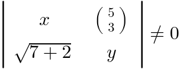
Stacking contexts
MathML elements can overlap due to various spacing rules. They
can as well contain extra graphical items
(bars, radical symbol, etc).
A MathML element with computed style
display: block math
or display: inline math generates a new stacking
context. The painting order
of in-flow children of such a MathML element
is exactly the same as block elements. The extra graphical
items are painted after text and background (right after
step 7.2.4 for display: inline math and right after
step 7.2 for display: block math).
Token Elements
Token elements in presentation markup are broadly intended to
represent the smallest units of mathematical notation which carry
meaning. Tokens are roughly analogous to words in text. However,
because of the precise, symbolic nature of mathematical notation, the
various categories and properties of token elements figure
prominently in MathML markup. By contrast, in textual data,
individual words rarely need to be marked up or styled specially.
In practice, most MathML token elements just contain simple text
for variables, numbers, operators etc and don't need sophisticated
layout. However, it can contain text with line breaks or
arbitrary HTML5 phrasing elements.
Text <mtext>
The
mtext
element is used to represent arbitrary text
that should be rendered as itself. In general, the
<mtext> element is intended to denote
commentary text.
The <mtext> element accepts the attributes described
in .
In the following example, [^mtext^] is used
to put conditional words in a definition:
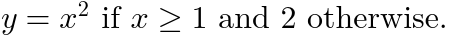
Layout of <mtext>
If the element does not have its computed
[^math/display^] property equal to
block math or inline math
then it is laid out according to the CSS specification where
the corresponding value is described.
Otherwise, the layout below is performed.
If the <mtext> element contains only text
content without
forced line break
or
soft wrap opportunity
then, the anonymous child node generated for that text is
laid out as defined in the relevant CSS specification and:
If the text content is made of a single glyph and this glyph
has an entry in the
MathItalicsCorrectionInfo table then the specified
value is used as the italic correction.
If the text content is made of a single glyph and this glyph
has an entry in the MathTopAccentAttachment table
then the specified value is used as the top accent attachment of
the <mtext> element.
The
mi
element represents a symbolic name or
arbitrary text
that should be rendered as an identifier. Identifiers can include
variables, function names, and symbolic constants.
The <mi> element accepts the attributes described
in as well as the following attribute:
[^mi/mathvariant^]
The layout algorithm is the same as the [^mtext^] element. The
user agent stylesheet
must contain the following property in order to implement automatic
italic via the text-transform value introduced in :
The
mathvariant
attribute,
if present, must be an
ASCII case-insensitive
match of normal.
In that case, the user agent is expected to treat the attribute as a
presentational hint setting the element's
text-transform
property to none. Otherwise it has no effects.
In [[MathML3]], the mathvariant attribute was used
to define logical classes of token elements, each class providing
a collection of typographically-related symbolic tokens with
specific meaning within a given mathematical expression.
In MathML Core, this attribute is only used to cancel automatic
italic of the [^mi^] element. For other use cases, the proper
Mathematical Alphanumeric Symbols [[UNICODE]] should be used
instead. See also section .
In the following example, [^mi^] is used to render
variables and function names. Note that identifiers containing a
single letter are italic by default.
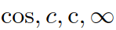
Number <mn>
The
mn
element represents a "numeric literal" or
other data that should be rendered as a numeric literal. Generally
speaking, a numeric literal is a sequence of digits, perhaps including a
decimal point, representing an unsigned integer or real number.
The <mn> element accepts the attributes described
in . Its layout algorithm is
the same as the
[^mtext^] element.
In the following example, [^mn^] is used to
write a decimal number.
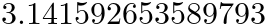
Operator, Fence, Separator or Accent <mo>
The
mo
element represents an
operator or anything that should be rendered as an operator.
In general, the notational conventions for mathematical operators
are quite complicated, and therefore MathML provides a relatively
sophisticated mechanism for specifying the rendering behavior of an
<mo> element.
As a consequence, in MathML the
list of things that should "render as an operator" includes a
number of notations that are not mathematical operators in the
ordinary sense. Besides ordinary operators with infix, prefix, or
postfix forms, these include fence characters such as braces,
parentheses, and "absolute value" bars; separators such as comma
and semicolon; and mathematical accents such as a bar or tilde over
a symbol. This chapter uses the term "operator" to refer to
operators in this broad sense.
The <mo> element accepts the attributes described
in as well as the following
attributes:
[^mo/form^]
[^mo/fence^]
[^mo/separator^]
[^mo/lspace^]
[^mo/rspace^]
[^mo/stretchy^]
[^mo/symmetric^]
[^mo/maxsize^]
[^mo/minsize^]
[^mo/largeop^]
[^mo/movablelimits^]
This specification does not define any observable behavior that is
specific to the fence and separator attributes.
Authors may use the
[^mo/fence^] and [^mo/separator^]
to describe specific semantics of operators.
The default values may be determined from the
Operators_fence and Operators_separator tables, or equivalently
the human-readable version
of the operator dictionary.
In the following example, the [^mo^] element
is used for the binary operator +. Default spacing is symmetric
around that operator. A tigher spacing is used if you rely
on the form attribute to force it to be
treated as a prefix operator.
Spacing can also be specified explicitly using the
[^mo/lspace^] and
[^mo/rspace^] attributes.
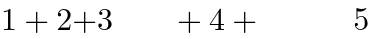
Another use case is for big operators such as summation.
When displaystyle is true, such an operator is drawn
larger but one can change that with the [^mo/largeop^] attribute.
When displaystyle is false, underscripts are actually
rendered as subscripts but one can change that with the
[^mo/movablelimits^] attribute.
Operators are also used for stretchy symbols such as fences,
accents, arrows etc. In the following example, the vertical arrow
stretches to the height of the [^mspace^] element.
One can override default stretch behavior with the
[^mo/stretchy^] attribute e.g. to force an unstretched arrow.
The [^mo/symmetric^] attribute allows to indicate whether
the operator
should stretch symmetrically above and below the math axis
(fraction bar).
Finally the [^mo/minsize^] and [^mo/maxsize^] attributes add
additional constraints over the stretch size.
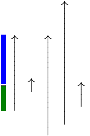
Note that the default properties of operators are
dictionary-based, as explained in
. For example a binary
operator typically has default symmetric spacing around it while a
fence is generally stretchy by default.
The stretch axis of an embellished operator
is inline if its
[=embellished operator/core operator=] contains only text content
made of a single character c, and that character has
inline intrinsic stretch axis.
Otherwise, the stretch axis of the embellished operator
is block.
The form
property of an embellished operator is either
infix, prefix or
postfix.
The corresponding form attribute on the
[^mo^] element, if present, must be an
ASCII case-insensitive
match to one of these values.
The algorithm for determining the form of an embellished operator is as follows:
If the form attribute is present and valid
on the [=embellished operator/core operator=], then its
ASCII lowercased value
is used.
If the embellished operator is the first in-flow child of a
grouping element,
[^mpadded^] or
[^msqrt^] with more than one in-flow child
(ignoring all space-like children) then it has
form prefix.
Or, if the embellished operator is the last in-flow child of
a
grouping element,
[^mpadded^] or
[^msqrt^]
with more than one in-flow child
(ignoring all space-like children) then it has
form postfix.
Or, if the embellished operator is an in-flow child of a
scripted element, other than the first in-flow
child, then it has form postfix.
Otherwise, the embellished operator has form
infix.
The
stretchy,
symmetric,
largeop,
movablelimits
properties of an embellished operator are
either false or true. In the latter
case, it
is said that the embellished operatorhas the
property.
The corresponding stretchy, symmetric, largeop, movablelimits attributes on the
[^mo^] element, if present, must be a
boolean.
The algorithm for determining the properties of
an embellished operator is as follows:
If the corresponding
stretchy,
symmetric,
largeop,
movablelimits,
lspace,
rspace,
maxsize or
minsize
attribute is present and valid
on the [=embellished operator/core operator=], then the
ASCII lowercased value
of this property is used.
If the [=embellished operator/core operator=] contains only text
content Content, then set Category
to the result of the
algorithm to determine the category of an operator(Content, Form)
where Form is the form
calculated at the previous step.
If Category is Default and
the form
of embellished operator was not explicitly specified
as an attribute on its [=embellished operator/core operator=]:
When used during layout,
the values of [=embellished operator/stretchy=],
[=embellished operator/symmetric=],
[=embellished operator/largeop=],
[=embellished operator/movablelimits=],
[=embellished operator/lspace=],
[=embellished operator/rspace=],
[=embellished operator/minsize=] are
obtained by the
algorithm for determining the properties of an embellished operator with the following extra resolutions:
Percentage values for lspace,
rspace are interpreted
relative to the value read from the dictionary
or to the fallback value above.
Interpretation of percentage values for minsize
and maxsize are described in
.
Font-relative lengths for
lspace, rspace,
minsize and maxsize rely on the
font style of the [=embellished operator/core operator=], not the one of the
embellished operator.
Layout of operators
If the <mo> element does not have its computed
[^math/display^] property equal to
block math or inline math
then it is laid out according to the CSS specification where
the corresponding value is described.
Otherwise, the layout below is performed.
The text of the operator must only be painted if the
visibility of
the <mo> element is visible.
In that case, it must be painted with the
color
of the <mo> element.
Operators are laid out as follows:
If the content of the <mo> element is not
made
of a single character c then fall back to the
layout algorithm of .
If the operator has the [=embellished operator/stretchy=] property:
If the [=embellished operator/stretch axis=] of the operator is inline:
The painting of the operator is performed by the
algorithm
to shape a stretchy glyph
stretched to inline dimensionTinline and
at position determined by the previous box metrics.
Otherwise, the [=embellished operator/stretch axis=] of the operator is
block. The following steps are performed:
If the operator has the [=embellished operator/symmetric=] property
then set the target sizes
Tascent and
Tdescent to
Sascent and
Sdescent respectively:
Otherwise set them to
Uascent and
Udescent respectively.
Let minsize and maxsize
be the [=embellished operator/minsize=] and [=embellished operator/maxsize=] properties on the
operator. Percentage values are interpreted relative
to T =
Tascent +
Tdescent.
If minsize < 0 then set minsize
to 0.
If maxsize < minsize then
set maxsize to minsize.
With 0 ≤ minsize ≤ maxsize:
If T ≤ 0 then set
Tascent to minsize / 2 and
then set Tdescent
to minsize −
Tascent.
Otherwise, if
0 < T < minsize
then first
multiply
Tascent
by minsize / T
and then set Tdescent
to minsize -
Tascent.
Otherwise, if maxsize < T
then first multiply
Tascent by
maxsize / T and
then set Tdescent
to maxsize −
Tascent.
The inline size,
ink line-ascent,
ink line-descent,
line-ascent and
line-descent
of the math content
are obtained by the algorithm to
shape a stretchy glyph
to block dimensionTascent +
Tdescent.
The inline size of the math content is the width of
the stretchy glyph. The stretchy glyph is shifted
towards the line-under by a value Δ so that its
center aligns with the center of the target:
the ink ascent of the math content is
the ascent of the stretchy glyph − Δ
and the ink descent of the math content is
the descent of the stretchy glyph + Δ.
These centers have coordinates "½(ascent − descent)"
so Δ = [(ascent of stretchy glyph − descent of stretchy glyph) − (Tascent − Tdescent)] / 2.
The painting of the operator is performed by the
algorithm to shape a stretchy glyph
stretched to block dimensionTascent +
Tdescent
and at position determined by the previous box metrics
shifted by Δ towards the line-over.
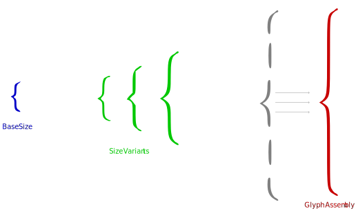
Base size, size variants and glyph assembly
for
the left brace
If the operator has the [=embellished operator/largeop=] property and
if math-style on
the <mo> element is normal,
then:
Use the
MathVariants
table to try and find a glyph of height at least
DisplayOperatorMinHeight.
If none is found, fall back to the
largest non-base glyph. If none is found, fall back to
the layout algorithm of .
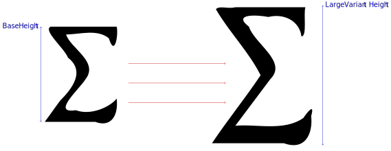
Base and displaystyle sizes of the summation symbol
Otherwise fall back to the
layout algorithm of .
If the algorithm to shape a stretchy glyph has been
used for one of the step above, then the italic correction
of the math content is set to the value returned by that algorithm.
If maxsize is equal to its default value ∞
then minsize ≤ maxsize is satisfied but
maxsize < T is not.
Space <mspace>
The
mspace
empty element represents a blank space of any
desired size, as set by its attributes.
The <mspace> element accepts the attributes described
in as well as the following
attributes:
[^mspace/width^]
[^mspace/height^]
[^mspace/depth^]
The
width,
height,
depth, if present, must
have a value that is a valid <length-percentage>.
If the width
attribute is present, valid and not a percentage then
that attribute is used as a
presentational hint
setting the element's
width
property to the corresponding value.
If the height
attribute is absent, invalid or a percentage then the requested
line-ascent is 0.
Otherwise the requested line-ascent is the resolved
value of the height attribute, clamping
negative values to 0.
If both the height and depth attributes
are present, valid and not a percentage then they are used as a
presentational hint
setting the element's
height
property to the concatenation of the strings
"calc(", the height attribute value,
" + ", the depth attribute value,
and ")".
If only one of these attributes is
present, valid and not a percentage then it is treated as a
presentational hint
setting the element's
height
property to the corresponding value.
In the following example, [^mspace^] is used to
force spacing within the formula (a 1px blue border is
added to easily visualize the space):
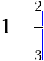
If the <mspace> element does not have its
computed
[^math/display^] property equal to
block math or inline math
then it is laid out according to the CSS specification where
the corresponding value is described.
Otherwise,
the <mspace> element is laid out as shown on
.
The min-content inline size,
max-content inline size and inline size of the math
content are equal to the resolved value of the
width property.
The block size of the math content is equal to the resolved
value of the height property.
The line-ascent of the math content is equal to the
requested line-ascent determined above.
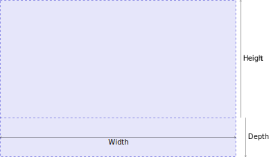
Box model for the <mspace> element
The terminology height/depth comes from [[MATHML3]], itself inspired
from [[TEXBOOK]].
Definition of space-like elements
A number of MathML presentation elements are "space-like" in the
sense that they typically render as whitespace, and do not affect
the mathematical meaning of the expressions in which they appear.
As a consequence, these elements often function in somewhat
exceptional ways in other MathML expressions.
Note that an [^mphantom^] is not
automatically defined to be space-like, unless its content is
space-like. This is because operator spacing is affected by
whether adjacent elements are space-like.
Since the <mphantom> element is
primarily intended as an aid in aligning expressions, operators
adjacent to an <mphantom> should behave
as if they were adjacent to the contents of the
<mphantom>, rather than to an equivalently
sized area of whitespace.
String Literal <ms>
ms
element is used to represent
"string literals" in expressions meant to be interpreted by computer
algebra systems or other systems containing "programming languages".
The <ms> element accepts the attributes described
in . Its layout algorithm is
the same as the [^mtext^] element.
In the following example, [^ms^] is used to
write a literal string of characters:
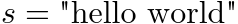
In MathML3, it was possible to use the lquote and
rquote attributes to respectively specify the strings
to use as opening and closing quotes. These are no longer supported
and the quotes must instead be specified as part of the text of the
<ms> element. One can add CSS rules to legacy
documents in order to preserve visual rendering. For example,
in left-to-right direction:
General Layout Schemata
Besides tokens there are several families of MathML presentation
elements. One family of elements deals with various "scripting"
notations, such as subscript and superscript. Another family is
concerned with matrices and tables. The remainder of the elements,
discussed in this section, describe other basic notations such as
fractions and radicals, or deal with general functions such as
setting style properties and error handling.
Group Sub-Expressions <mrow>
The
mrow
element is used to group together any number of sub-expressions, usually
consisting of one or more <mo> elements acting as
"operators" on one or more other expressions that are their "operands".
In the following example, [^mrow^] is used to
group a sum "1 + 2/3" as a fraction numerator (first child
of [^mfrac^]) and to construct a fenced expression
(first child of [^msup^]) that is raised to the power of 5.
Note that [^mrow^] alone does not add visual fences
around its grouped content, one has to explicitly specify them
using the [^mo^] element.
Within the [^mrow^] elements, one can see that
vertical alignment of children (according to the
alphabetic baseline or the mathematical baseline)
is properly performed, fences are vertically stretched and
spacing around the binary + operator automatically calculated.
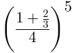
The <mrow> element accepts the attributes described
in . An <mrow>
element with in-flow children
child1, child2, …, childN
is laid out as shown on . The child boxes
are put in a row one after the other with all their
alphabetic baselines
aligned.
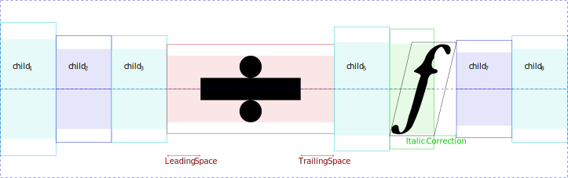
Box model for the <mrow> element
Because the box model ensures alignment of alphabetic baselines,
fraction bars or symmetric stretchy operators
will also be aligned along the math axis in the typical case when
AxisHeight is the same for all in-flow children.
Algorithm for stretching operators along the block axis
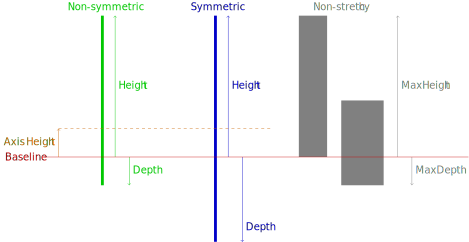
Symmetric and non-symmetric stretching of
operators along the block axis
The algorithm for stretching operators along the block axis
consists in the following steps:
Otherwise,
split the list of in-flow children into a first list
LToStretch containing
embellished operators with
a [=embellished operator/stretchy=] property and block [=embellished operator/stretch axis=];
and a second list LNotToStretch.
Perform layout without any stretch size constraint on
all the items of LNotToStretch.
If LToStretch is empty then stop.
If LNotToStretch is empty, perform
layout with stretch size constraint 0 on
all the items of LToStretch.
Calculate the unconstrained target sizes
Uascent
and Udescent as respectively the maximum
ink ascent and maximum ink descent of the margin boxes of
in-flow children that
have been laid out in the previous step.
If the box is not an anonymous <mrow> box
and the associated element does not have its computed
[^math/display^] property equal to
block math or inline math
then it is laid out according to the CSS specification where
the corresponding value is described.
Otherwise, the layout below is performed.
Large operators may have nonzero italic correction but that one
is used when attaching scripts.
More generally, all embellished operators
are treated as non-slanted since the spacing around them is
calculated as specified by [=embellished operator/lspace=] and
[=embellished operator/rspace=].
If the child is slanted then
set previous-italic-correction to
its italic correction. Otherwise set it to 0.
If the child is an embellished operator
and add-space is true then
increment inline-offset by
its [=embellished operator/rspace=] property.
The italic correction of the math content is set to the italic
correction of the last in-flow child, which is
the final value of previous-italic-correction.
Fractions <mfrac>
The
mfrac
element is used for fractions. It can also be used to mark up
fraction-like objects such as binomial coefficients and Legendre symbols.
If the <mfrac> element does not have its computed
[^math/display^] property equal to block math
or inline math
then it is laid out according to the CSS specification where
the corresponding value is described.
Otherwise, the layout below is performed.
The <mfrac> element accepts the attributes described
in as well as the
following attribute:
[^mfrac/linethickness^]
The
linethickness
attribute indicates the fraction line thickness
to use for the fraction bar.
If present, it must
have a value that is a valid <length-percentage>.
If the attribute is absent or has an invalid value,
FractionRuleThickness is used as the default
value. A percentage is interpreted relative to that default value.
A negative value is interpreted as 0.
The following example contains four fractions
with different [^mfrac/linethickness^] values. The bars are always
aligned with the middle of plus and minus signs.
The numerator and denominator are horizontally centered.
The fractions that are not in displaystyle
use smaller gaps and font-size.
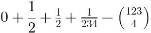
The <mfrac> element sets
displaystyle to false,
or if it was already false increments
scriptlevel by 1, within its children.
It sets math-shift to
compact within its second child.
To avoid visual confusion between the fraction bar and another
adjacent items (e.g. minus sign or another fraction's bar),
a default 1-pixel space is added around the element.
The user agent stylesheet
must contain the following rules:
If the <mfrac> element
has less or more than two in-flow children, its layout algorithm
is the same as the [^mrow^] element.
Otherwise, the first in-flow child is called
numerator, the second in-flow child is called
denominator and the layout algorithm is explained below.
If the fraction line thickness is nonzero, the
<mfrac>
element is laid out as shown on .
The fraction bar must only be painted if the
visibility of
the <mfrac> element is visible.
In that case, the fraction bar must be painted with the
color
of the <mfrac> element.
The math content box is placed within the
content box so that their block-start edges
are aligned and the middles of these edges are at the same
position.
The math content box is placed within the
content box so that their block-start edges
are aligned and the middles of these edges are at the same
position.
Radicals <msqrt>, <mroot>
The radical elements construct an expression with a
root symbol √ with a line over the content.
The msqrt element is
used for square roots, while the mroot element is
used to draw radicals with indices, e.g. a cube root.
The <msqrt> and <mroot>
elements accept the attributes described
in .
The following example contains a square root
written with [^msqrt^] and a cube root written
with [^mroot^].
Note that [^msqrt^] has several children and the
square root applies to all of them.
[^mroot^] has exactly two children: it is a
root of index the second child (the number 3), applied to the
first child (the square root).
Also note these elements only change the font-size within the
[^mroot^] index, but it is scaled down more than
within the numerator and denumerator of the fraction.
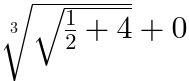
The <msqrt> and <mroot>
elements sets math-shift to
compact.
The <mroot> element
increments scriptlevel by 2, and sets displaystyle to "false" in all
but its first child.
The user agent stylesheet
must contain the following rule in order to implement that behavior:
If the <msqrt> or <mroot>
element do not have their computed
[^math/display^] property equal to block math
or inline math
then they are laid out according to the CSS specification where
the corresponding value is described.
Otherwise, the layout below is performed.
If the <mroot> has less or more than two
in-flow children,
its layout algorithm
is the same as the [^mrow^] element.
Otherwise, the first in-flow child is called
mroot base and
the second in-flow child is called
mroot index
and its layout algorithm is explained below.
In practice, an <mroot> element has two children
that are in-flow. Hence the CSS rules basically perform
scriptlevel and displaystyle changes for the index.
The radical symbol must only be painted if the
visibility of
the <msqrt> or <mroot>
element is visible.
In that case, the radical symbol must be painted with the
color
of that element.
The radical glyph is the glyph obtained for the
character U+221A SQUARE ROOT.
The radical target size for the stretchy radical glyph is
the sum of RadicalRuleThickness,
radical gap and the ink height of the base.
The box metrics of the radical glyph
and painting of the surd are given by the algorithm to
shape a stretchy glyph to block dimension the
target size for the radical glyph.
The <mroot> element is laid out as shown on
.
The mroot index is first ignored and the mroot base
and
radical glyph are laid out as
shown on figure
using the same algorithm as in
in order to produce a margin box B (represented in green).
In general, the kerning before the root index is positive while
the kerning after it is negative, which means that the root
element will have some inline-start space and that the root index
will overlap the surd.
Style Change <mstyle>
Historically, the
mstyle
element was introduced to make
style changes that affect the rendering of its contents.
The <mstyle> element accepts the attributes described in
. Its layout algorithm is the
same as the [^mrow^] element.
<mstyle> is implemented for compatibility with full MathML. Authors whose only target is MathML Core are encouraged to use CSS for styling.
In the following example,
[^mstyle^] is used to set the scriptlevel
and displaystyle.
Observe this is respectively affecting the
font-size and placement of subscripts of their
descendants. In MathML Core, one could just have used
[^mrow^] elements instead.
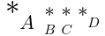
Error Message <merror>
The
merror
element displays its contents as an
”error message”. The intent of this element is to provide a standard way
for programs that generate MathML from other input to report syntax errors
in their input.
In the following example,
[^merror^] is used to indicate a parsing error
for some LaTeX-like input:
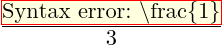
The <merror> element accepts the attributes described in
. Its layout algorithm is the
same as the [^mrow^] element.
The user agent stylesheet
must contain the following rule in order to visually highlight the error
message:
Adjust Space Around Content <mpadded>
The
mpadded
element renders the same as its in-flow child content, but with the
size and relative positioning point of its
content modified according to <mpadded>’s attributes.
The <mpadded> element accepts the attributes described
in as well as the following
attributes:
[^mpadded/width^]
[^mpadded/height^]
[^mpadded/depth^]
[^mpadded/lspace^]
[^mpadded/voffset^]
The
width,
height,
depth,
lspace
and
voffset
if present, must
have a value that is a valid <length-percentage>.
In the following example, [^mpadded^] is used to
tweak spacing around a fraction
(a blue background is used to visualize it).
Without attributes, it behaves like an [^mrow^] but
the attributes allow to specify the size of the box
(width, height, depth) and position of the fraction within that
box (lspace and voffset).
The requested <mpadded>
parameters are determined as follows:
The requested width
is the resolved value of the
width property.
If the width
attribute is present, valid and not a percentage then
that attribute is used as a
presentational hint
setting the element's
width
property to the corresponding value.
If the height
attribute is absent, invalid or a percentage then the requested
height is the inner line-ascent.
Otherwise the requested height is the resolved
value of the height attribute, clamping
negative values to 0.
If the depth
attribute is absent, invalid or a percentage then the requested
depth is the inner line-ascent.
Otherwise the requested depth is the resolved
value of the depth attribute, clamping
negative values to 0.
If the lspace
attribute is absent, invalid or a percentage then the requested
lspace is 0. Otherwise the requested lspace is the resolved
value of the lspace attribute, clamping
negative values to 0.
If the voffset
attribute is absent, invalid or a percentage then the requested
voffset is 0. Otherwise the requested voffset is the resolved
value of the voffset attribute.
Negative voffset values are not clamped to
0.
Layout of <mpadded>
If the <mpadded> element does not have its
computed
[^math/display^] property equal to block math
or inline math
then it is laid out according to the CSS specification where
the corresponding value is described.
Otherwise, it is laid out as shown on
.
Historically, the
mphantom
element was introduced to render
its content invisibly, but with the same metrics size and other dimensions,
including alphabetic baseline position that its contents would have if they were
rendered normally.
In the following example,
[^mphantom^] is used to ensure alignment of
corresponding parts of the numerator and denominator of a
fraction:
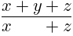
The <mphantom> element accepts the attributes described
in . Its layout algorithm is
the same as the [^mrow^] element.
The user agent stylesheet
must contain the following rule in order to hide the content:
<mphantom> is implemented for compatibility with full MathML. Authors whose only target is MathML Core are encouraged to use CSS for styling.
Script and Limit Schemata
The elements described in this section position one or more scripts
around a base. Attaching various kinds of scripts and embellishments
to symbols is a very common notational device in mathematics. For
purely visual layout, a single general-purpose element could suffice
for positioning scripts and embellishments in any of the traditional
script locations around a given base. However, in order to capture
the abstract structure of common notation better, MathML provides
several more specialized scripting elements.
In addition to sub-/superscript elements, MathML has overscript and
underscript elements that place scripts above and below the base.
These elements can be used to place limits on large operators, or for
placing accents and lines above or below the base.
Subscripts and Superscripts <msub>, <msup>, <msubsup>
The msub,
msup and
msubsup elements are used to attach
subscript and superscript to a MathML expression.
They accept the attributes described in
.
The following example shows basic use of subscripts and
superscripts. The font-size is automatically scaled down
within the scripts.
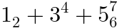
If the
<msub>,
<msup> or
<msubsup> elements do not have their
computed
[^math/display^] property equal to block math
or inline math
then they are laid out according to the CSS specification where
the corresponding value is described.
Otherwise, the layout below is performed.
Children of <msub>,
<msup>, <msubsup>
If the <msub> element
has less or more than two in-flow children, its layout algorithm
is the same as the [^mrow^] element.
Otherwise, the first in-flow child is called the
msub base, the second in-flow child is called the
msub subscript and the layout algorithm is explained
in .
If the <msup> element
has less or more than two in-flow children, its layout algorithm
is the same as the [^mrow^] element.
Otherwise, the first in-flow child is called the
msup base, the second in-flow child is called the
msup superscript and the layout algorithm is explained
in .
If the <msubsup> element
has less or more than three in-flow children, its layout algorithm
is the same as the [^mrow^] element.
Otherwise, the first in-flow child is called the
msubsup base, the second in-flow child
is called the msubsup subscript,
its third in-flow child is called
the msubsup superscript and the layout algorithm is explained
in .
Base with subscript
The <msub> element is laid out as shown on
.
LargeOpItalicCorrection
is the italic correction of the msub base
if it is an embellished operator with
the [=embellished operator/largeop=] property and 0 otherwise.
If there is an
inline stretch size constraint
or a block stretch size constraint
then the msub base is also laid out with the same stretch size
constraint and otherwise it is laid out without any stretch
size constraint. The scripts are always laid out without
any stretch size constraint.
The <msup> element is laid out as shown on
.
ItalicCorrection
is the italic correction of the msup base
if it is not an embellished operator with
the [=embellished operator/largeop=] property and 0 otherwise.
If there is an
inline stretch size constraint
or a block stretch size constraint
then the msup base is also laid out with the same stretch size
constraint and otherwise it is laid out without any stretch
size constraint. The scripts are always laid out without
any stretch size constraint.
If there is an
inline stretch size constraint
or a block stretch size constraint
then the msubsup base is also laid out with the same stretch size
constraint and otherwise it is laid out without any stretch
size constraint. The scripts are always laid out without
any stretch size constraint.
If there is an
inline stretch size constraint
or a block stretch size constraint
then the msubsup base is also laid out with the same stretch size
constraint and otherwise it is laid out without any stretch
size constraint. The scripts are always laid out without
any stretch size constraint.
Even when the msubsup subscript (respectively msubsup superscript) is an empty
box, <msubsup>
does not generally render the same as
(respectively )
because of the additional constraint on
SubSuperGap.
Moreover, positioning the empty msubsup subscript
(respectively msubsup superscript)
may also change the total size.
In order to keep the algorithm simple, no attempt is made to
handle empty scripts in a special way.
Underscripts and Overscripts <munder>, <mover>, <munderover>
The munder,
mover and
munderover elements are used to
attach
accents or limits placed under or over a MathML expression.
The <munderover> element accepts the attribute
described in as well as the
following attributes:
[^munderover/accent^]
[^munderover/accentunder^]
Similarly, the <mover> element
(respectively <munder> element) accepts the
attribute described in
as well as the [^mover/accent^]
attribute (respectively the
[^mover/accentunder^] attribute).
accent,
accentunder
attributes, if present, must have values that are booleans.
If these attributes are absent or invalid, they are treated as
equal to false.
User agents must implement them as described in
.
The following example shows basic use of under- and overscripts.
The font-size is automatically scaled down within the scripts,
unless they are meant to be accents.
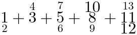
If the
<munder>,
<mover> or
<munderover> elements do not have their
computed
[^math/display^] property equal to block math
or inline math
then they are laid out according to the CSS specification where
the corresponding value is described.
Otherwise, the layout below is performed.
Children of <munder>,
<mover>, <munderover>
If the <munder> element
has less or more than two in-flow children, its layout algorithm
is the same as the [^mrow^] element.
Otherwise, the first in-flow child is called the
munder base and the second in-flow child is called the
munder underscript.
If the <mover> element
has less or more than two in-flow children, its layout algorithm
is the same as the [^mrow^] element.
Otherwise, the first in-flow child is called the
mover base and the second in-flow child is called the
mover overscript.
If the <munderover> element
has less or more than three in-flow children, its layout algorithm
is the same as the [^mrow^] element.
Otherwise, the first in-flow child is called the
munderover base, the second in-flow child
is called the munderover underscript
and its third in-flow child is called
the munderover overscript.
If the
<munder>, <mover> or
<munderover> elements have a computed
math-style property equal to compact
and their base is an embellished operator with the
[=embellished operator/movablelimits=] property, then
their layout algorithms are respectively
the same as the ones described for
<msub>, <msup> and
<msubsup> in
,
and
.
Otherwise, the
<munder>, <mover> and
<munderover> layout algorithms are respectively
described in
,
and
.
Algorithm for stretching operators along the inline axis
The algorithm for stretching operators along the inline
axis
is as follows.
Split the list of in-flow children that have not been
laid out yet into a first list
LToStretch containing
embellished operators with
a [=embellished operator/stretchy=] property and inline [=embellished operator/stretch axis=];
and a second list LNotToStretch.
Perform layout without any stretch size constraint on
all the items of LNotToStretch.
If LToStretch is empty then stop.
If LNotToStretch is empty, perform
layout with stretch size constraint 0 on
all the items of LToStretch.
Calculate the target size T to
the maximum inline size of the
margin boxes of child boxes that have been laid out in the
previous step.
The <munder> element is laid out as shown on
.
LargeOpItalicCorrection
is the italic correction of the munder base
if it is an embellished operator with
the [=embellished operator/largeop=] property and 0 otherwise.
The munder base is an
embellished operator with the
[=embellished operator/stretchy=] property
and [=embellished operator/stretch axis=] inline.
UnderShift is the maximum of:
The math content box is placed within the
content box so that their block-start edges
are aligned and the middles of these edges are at the same
position.
Base with overscript
The <mover> element is laid out as shown on
.
LargeOpItalicCorrection
is the italic correction of the mover base
if it is an embellished operator with
the [=embellished operator/largeop=] property and 0 otherwise.
The mover base is an
embellished operator with the
[=embellished operator/stretchy=] property and
[=embellished operator/stretch axis=] inline.
OverShift is the maximum of:
For accent overscripts and bases with line-ascents that are at
most
AccentBaseHeight, the rule from
[[OPEN-FONT-FORMAT]] [[?TEXBOOK]] is actually to align the
alphabetic baselines of the overscripts and of the bases. This assumes that
accent glyphs are designed in such a way that their ink bottoms
are
more or less AccentBaseHeight above their alphabetic baselines. Hence,
the previous rule will guarantee that all the overscript bottoms
are aligned while still avoiding collision with the bases.
However, MathML can have arbitrary accent overscripts, so
a more general and simpler rule is provided above: Ensure
that the bottom of overscript is at least
AccentBaseHeight above the alphabetic baseline of the base.
The line-ascent of the math content is the maximum between:
The math content box is placed within the
content box so that their block-start edges
are aligned and the middles of these edges are at the same
position.
Base with underscript and overscript
The general layout of <munderover> is shown on
. The
LargeOpItalicCorrection,
UnderShift,
UnderExtraDescender,
OverShift,
OverExtraDescender parameters
are calculated the same as in
and
.
The math content box is placed within the
content box so that their block-start edges
are aligned and the middles of these edges are at the same
position.
When the underscript (respectively overscript) is an empty
box, the base and overscript (respectively underscript) are laid
out similarly to
(respectively )
but the position of the empty underscript (respectively
overscript) may add extra space.
In order to keep the algorithm simple, no attempt is made to
handle empty scripts in a special way.
Prescripts and Tensor Indices <mmultiscripts>
Presubscripts and tensor notations are represented by
the mmultiscripts element.
The mprescripts element is
used as a separator between the postscripts and prescripts.
These two elements accept the attributes described in
.
The following example shows basic use of prescripts
and postscripts, involving a [^mprescripts^].
Empty [^mrow^] elements are used at positions where
no scripts are rendered.
The font-size is automatically scaled down within the scripts.
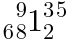
If the
<mmultiscripts> or
<mprescripts>
elements do not have their
computed
[^math/display^] property equal to block math
or inline math
then they are laid out according to the CSS specification where
the corresponding value is described.
Otherwise, the layout below is performed.
The
<mprescripts>
element is laid out as an [^mrow^]
element.
A valid <mmultiscripts> element contains the
following in-flow children:
A first in-flow child, called the
mmultiscripts base, that is not an
[^mprescripts^] element.
Followed by an even number of in-flow children called
mmultiscripts postscripts, none of them being a
[^mprescripts^] element.
These scripts form a (possibly empty) list
subscript, superscript, subscript, superscript,
subscript, superscript, etc.
Each consecutive couple of children subscript, superscript
is called a
subscript/superscript pair.
Optionally followed by
an [^mprescripts^] element and
an even number of in-flow children called
mmultiscripts prescripts, none of them being a
[^mprescripts^] element.
These scripts form a (possibly empty) list of
subscript/superscript pair.
If an <mmultiscripts> element is not valid then
it is laid out the same as the
[^mrow^] element.
Otherwise the layout algorithm is performed as in
.
SubShift (respectively SuperShift)
is calculated by taking the maximum of all subshifts
(respectively supershifts) of each
subscript/superscript pair as described in
.
The line-ascent of the math content is calculated
by taking the maximum of all the line-ascent
of each subscript/superscript pair as described in
but using the SubShift and
SuperShift values calculated above.
The line-descent of the math content is calculated
by taking the maximum of all the line-descent
of each subscript/superscript pair as described in
but using the SubShift and
SuperShift values calculated above.
Finally, the placement of the in-flow children is performed using
the
following algorithm:
An <mmultiscripts> with only one
subscript/superscript pair of
mmultiscripts postscripts is laid out the same as a
<msubsup> with the same in-flow children.
However, as
noticed for
<msubsup>,
if additionally the subscript (respectively superscript) is an
empty box then it is not necessarily laid out the same as an
<msub>
(respectively <msup>) element.
In order to keep the algorithm simple, no attempt is made to
handle empty scripts in a special
way.
Displaystyle, scriptlevel and math-shift in scripts
For all scripted elements, the rule of thumb is to set
displaystyle to false and
to increment scriptlevel in all child
elements but the first one.
However, an [^mover^] (respectively
[^munderover^])
element with an [^mover/accent^]
attribute that is an
ASCII case-insensitive
match to true does not increment scriptlevel within
its second child (respectively third child). Similarly,
[^mover^] and
[^munderover^] elements
with an [^mover/accentunder^]
attribute that is an
ASCII case-insensitive
match to true do not increment scriptlevel within
their second child.
<mmultiscripts> sets
math-shift to
compact on its children at even position if they are
before an [^mprescripts^], and on those at odd position
if they are after
an [^mprescripts^].
The <msub> and <msubsup>
elements set math-shift to
compact on their second child.
[^mover^] and
[^munderover^]
elements with an [^mover/accent^]
attribute that is an
ASCII case-insensitive
match to true also set math-shift to
compact within their first child.
The
must contain the following
style in order to implement this behavior:
In practice, all the children of the MathML elements described in
this section are in-flow and the
<mprescripts> is empty.
Hence the CSS rules essentially perform automatic displaystyle and
scriptlevel changes for the scripts; and
math-shift changes for
subscripts and sometimes the base.
Tabular Math
Matrices, arrays and other table-like mathematical notation are marked up
using
[^mtable^]
[^mtr^]
[^mtd^]
elements. These elements are similar to the
[^table^],
[^tr^]
and
[^td^]
elements of [[HTML]].
The following example shows how tabular layout allows to write a
matrix. Note that it is vertically centered with the fraction
bar and the middle of the equal sign.
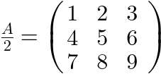
Table or Matrix <mtable>
The mtable is laid out as an
inline-table and sets
displaystyle to false. The
user agent stylesheet must contain
the following rules in order to implement these properties:
The <mtable> accepts the attributes described
in .
Row in Table or Matrix <mtr>
The mtr is laid out as
table-row. The
user agent stylesheet must contain
the following rules in order to implement that behavior:
The <mtr> accepts the attributes described
in .
Entry in Table or Matrix <mtd>
The mtd is laid out as
a table-cell with content centered in the cell and
a default padding. The
user agent stylesheet must contain
the following rules:
The <mtd> accepts the attributes described
in as well as the following attributes:
The colspan (respectively
rowspan) attribute has the same
syntax and semantics as the
[^td/colspan^]
(respectively
[^td/rowspan^])
attribute on the <td> element from [[HTML]].
In particular, the parsing of these attributes is handled as
described in the
algorithm for processing rows.
The name of the column spanning attribute in [[MathML3]] and earlier
versions was columnspan. For consistency with [[HTML]],
this specification uses colspan instead.
Historically, the
maction
element provides a mechanism
for binding actions to expressions.
The <maction> element accepts the attributes described
in as well as the following
attributes:
[^maction/actiontype^]
[^maction/selection^]
This specification does not define any observable behavior
that is specific to the actiontype and selection
attributes.
The following example shows the "toggle" action type from
[[MathML3]]
where the renderer alternately displays the selected subexpression,
starting from "one third" and cycling through them when there is a
click on the selected subexpression ("one quarter", "one half",
"one third", etc). This is not part of MathML Core but can be
implemented using JavaScript and CSS polyfills. The default behavior
is just to render the first child.
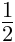
The layout algorithm of the <maction> element
is the same as the <mrow> element.
The user agent stylesheet
must contain the following rules in order to hide all but
its first child element,
which is the default behavior for the legacy actiontype
values:
<maction> is implemented for compatibility with full MathML. Authors whose only target is MathML Core are encouraged to use other HTML, CSS and JavaScript mechanisms to implement custom actions. They may
rely on maction attributes defined in [[MathML3]].
Semantics and Presentation
The
semantics
element is the container element that associates
annotations with a MathML expression. Typically, the
<semantics> element has as its first child element
a MathML expression to be annotated while subsequent child elements
represent
text annotations within an annotation
element, or more complex markup annotations within
an annotation-xml element.
The following example shows how the fraction "one half" can be
annotated with a textual annotation (LaTeX) or an XML annotation
(content MathML). These annotations are not intended to be rendered
by the user agent.
The <semantics> element accepts the attributes
described in . Its layout algorithm
is the same as the [^mrow^] element.
The user agent stylesheet
must contain the following rule in order to only render the annotated
MathML expression:
The <annotation-xml> and
<annotation> element accepts the attributes
described in as well as the
following attribute:
[^annotation/encoding^]
This specification does not define any observable behavior that is
specific to the encoding attribute.
The layout algorithm of the <annotation-xml>
and <annotation>
element is the same as the [^mtext^] element.
Authors can use the [^annotation/encoding^] attribute to distinguish
annotations
for HTML integration point,
clipboard copy, alternative rendering, etc.
In particular, CSS can be used to render alternative annotations, e.g.
/* Hide the annotated child. */
semantics > :first-child { display: none; }
/* Show all text annotations. */
semantics > annotation { display: inline; }
/* Show all HTML annotations. */
semantics > annotation-xml[encoding="text/html" i],
semantics > annotation-xml[encoding="application/xhtml+xml" i] {
display: inline-block;
}
CSS Extensions for Math Layout
The display: block math
and display: inline math value
The display property
from
is extended with a new inner display type:
For elements that are not MathML elements, if the specified
value of display is inline math or
block math then the computed value is
block flow and inline flow respectively.
For the [^mtable^] element
the computed value is block table and
inline table respectively.
For the [^mtr^] element, the computed value
is table-row.
For the [^mtd^] element, the computed value
is table-cell.
MathML elements with a
computed display value equal to
block math or inline math
control box generation and layout according to their tag name, as
described in the relevant sections.
Unknown MathML elements
behave the same as the [^mrow^] element.
The display: block math and
display: inline math values provide a default
layout for MathML elements while at the same time allowing
to override it with either native display values or
custom values.
This allows authors or polyfills to define their own custom notations
to tweak or extend MathML Core.
In the following example, the default layout of the
MathML [^mrow^] element is overridden to render its
content as a grid.
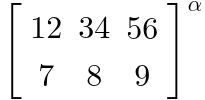
New text-transform value
The text-transform property
from
is extended with a new value:
On text nodes containing a single character, if the computed value
is math-auto then the transformed text is obtained by
performing conversion of each character according to the
italic table.
A common style convention is to render
identifiers with multiple letters (e.g. the function name "exp")
with normal style and identifiers with a single letter
(e.g. the variable "n") with italic style. The
math-auto property is intended to implement this
default behavior, which can be overridden by authors if necessary.
Note that mathematical fonts are designed with a special kind
of italic glyphs located at the
Unicode positions of
, which differ from the shaping
obtained via italic font style. Compare this
mathematical formula
rendered with the Latin Modern Math font using
font-style: italic (left) and
text-transform: math-auto (right):
When math-style is compact,
the math layout on descendants tries to minimize the
logical height by
applying the following rules:
The font-size is scaled down when
its specified value is math and
the computed value of math-depth is
auto-add (default for [^mfrac^])
as described in .
Operators with the [=embellished operator/largeop=] property
do not follow rules from
to make them bigger.
Under-/overscripts attached to an operator with
the [=embellished operator/movablelimits=] property are actually drawn as sub-/superscripts
as described in .
Smaller vertical gaps and shifts from the OpenType MATH table are used for fractions and radicals,
as described in
,
and
.
The following example shows a
mathematical formula rendered with
its [^math^] root styled with
math-style: compact (left) and
math-style: normal (right).
In the former case, the font-size is automatically scaled down
within the fractions and the summation limits are rendered as
subscript and superscript of the ∑. In the latter case, the ∑ is
drawn bigger than normal text and
vertical gaps within fractions (even relative to current
font-size) are larger.
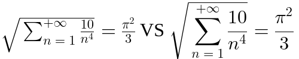
These two math-style values typically correspond to
mathematical expressions in inline and display
mode respectively [[TeXBook]].
A mathematical formula in display mode
may automatically switch to inline mode within some subformulas
(e.g. scripts, matrix elements, numerators and denominators, etc)
and it is sometimes desirable to override this default behavior.
The math-style property allows to easily implement these
features for MathML in the
user agent stylesheet
and with the displaystyle attribute; and also exposes
them to polyfills.
If the value of math-shift is compact, the math layout on descendants will use the
superscriptShiftUpCramped parameter to place superscript.
If the value of math-shift is normal, the math
will use the superscriptShiftUp parameter instead.
This property is used for positioning superscript during the layout
of MathML scripted elements.
See § ,
and
.
In the following example, the two "x squared" are rendered with
compact math-style and the same font-size.
However, the one within the square root is rendered with
compact math-shift while
the other one is rendered with
normal math-shift, leading
to subtle different shift of the superscript "2".
Per [[TeXBook]], a
mathematical formula uses normal style by default but may
switch to compact style ("cramped" in TeX's terminology)
within some subformulas
(e.g. radicals, fraction denominators, etc).
The math-shift property allows to easily
implement these rules for MathML in the
user agent stylesheet.
Page authors or developers of polyfills may also benefit from
having access to this property to tweak or refine the default
implementation.
The math-depth property
A new math-depth property is introduced to describe a notion
of "depth" for each element of a mathematical formula, with respect to
the top-level container of that formula. Concretely, this is used to
determine the computed value of the
font-size
property when its specified value is math.
The computed value of the math-depth value is
determined as follows:
If the specified value of math-depth is
auto-add and
the inherited value of math-style
is compact then the computed value of
math-depth of the element is its inherited value plus one.
If the specified value of math-depth is of
the form add(<integer>) then the computed value
of math-depth of the element is its inherited value plus
the specified integer.
If the specified value of math-depth is of the form
<integer> then the computed value
of math-depth of the element is the specified integer.
Otherwise, the computed value
of math-depth of the element is the inherited one.
If the specified value
font-size
is math then the
computed value of
font-size
is obtained by multiplying the inherited value of
font-size
by a nonzero scale factor calculated by the
following procedure:
Let A be the inherited math-depth value,
B the computed math-depth value,
C be 0.71 and S be 1.0
If A = B then return S.
If B < A, swap A and B and set InvertScaleFactor to true.
Otherwise B > A and set InvertScaleFactor to false.
Return S if InvertScaleFactor is false and 1/S otherwise.
The following example shows a mathematical formula
with normal math-style
rendered with the Latin Modern Math font.
When entering subexpressions like scripts or fractions,
the font-size is automatically scaled down according to the
values of MATH table contained in that font.
Note that font-size is scaled down when
entering the superscripts but even faster when entering a
root's prescript. Also it is scaled down when entering the inner
fraction but not when entering the outer one, due to automatic
change of math-style in fractions.
These rules from [[TeXBook]] are subtle and it's worth having a
separate math-depth mechanism to express and
handle them. They can be implemented in MathML using the
user agent stylesheet.
Page authors or developers of polyfills may also benefit from
having access to this property to tweak or refine the default
implementation. In particular, the scriptlevel attribute
from MathML provides a way to perform math-depth
changes.
OpenType MATH table
This chapter describes features provided by MATH table
of an OpenType font [[OPEN-FONT-FORMAT]]. Throughout this chapter,
a C-like notation
Table.Subtable1[index].Subtable2.Parameter is used to
denote OpenType parameters.
Such parameters may not be available (e.g. if the font lacks one of the
subtable, has an invalid offset, etc) and so fallback options are
provided.
It is strongly encouraged to render MathML with a math font with
the proper OpenType features. There is no guarantee that the fallback
options provided will provide good enough rendering.
OpenType values expressed in design units (perhaps indirectly via a
MathValueRecord entry) are scaled to appropriate values
for layout purpose, taking into account
head.unitsPerEm, CSS
font-size
or zoom level.
The subtable
MATH.MathGlyphInfo.MathItalicsCorrectionInfo
of italics correction values. Use the corresponding value in
MATH.MathGlyphInfo.MathItalicsCorrectionInfo.italicsCorrection
if there is one for the requested glyph or
0 otherwise.
MathTopAccentAttachment
The subtable
MATH.MathGlyphInfo.MathTopAccentAttachment
of positioning top math accents along the inline axis.
Use the corresponding value in
MATH.MathGlyphInfo.MathTopAccentAttachment.topAccentAttachment
if there is one for the requested glyph or
half the advance width of the glyph otherwise.
Size variants for operators (MathVariants)
This section describes how to handle stretchy glyphs of arbitrary
size using the MATH.MathVariants table.
The GlyphAssembly table
This section is based on [[?OPEN-TYPE-MATH-IN-HARFBUZZ]].
For convenience, the following definitions are used:
omin is
MATH.MathVariant.minConnectorOverlap.
A GlyphPartRecord is an extender
if and only if
GlyphPartRecord.partFlags has the
fExtender flag set.
A GlyphAssembly is horizontal
if it is obtained from
MathVariant.horizGlyphConstructionOffsets.
Otherwise it is vertical (and obtained from
MathVariant.vertGlyphConstructionOffsets).
For a given GlyphAssembly table,
NExt (respectively
NNonExt) is the number of extenders
(respectively non-extenders) in
GlyphAssembly.partRecords.
For a given GlyphAssembly table,
SExt (respectively
SNonExt) is the sum of
GlyphPartRecord.fullAdvance
for all extenders (respectively non-extenders) in
GlyphAssembly.partRecords.
SExt,NonOverlapping = SExt − ominNExt
is the sum of maximum non overlapping parts of extenders.
User agents must treat the GlyphAssembly as invalid
if the following conditions are not satisfied:
NExt > 0. Otherwise, the assembly cannot
be grown by repeating extenders.
SExt,NonOverlapping > 0.
Otherwise, the assembly does not grow when joining extenders.
For each GlyphPartRecord
in GlyphAssembly.partRecords,
the values of
GlyphPartRecord.startConnectorLength and
GlyphPartRecord.endConnectorLength
must be at least omin.
Otherwise, it is not possible to satisfy the condition of
MathVariant.minConnectorOverlap.
In this specification, a glyph assembly is built by repeating each
extender r times and using the same overlap value o between each
glyph. The number of glyphs in such an assembly is
AssemblyGlyphCount(r) = NNonExt + r NExt while
the stretch size is
AssembySize(o, r) =
SNonExt + r SExt
− o (AssemblyGlyphCount(r) − 1).
rmin is the minimal number of repetitions
needed to obtain an assembly of
size at least T, i.e. the minimal r such that
AssembySize(omin, r) ≥ T.
It is defined as the maximum between 0 and the ceiling of
((T − SNonExt + omin (NNonExt − 1)) / SExt,NonOverlapping).
omax,theorical = (AssembySize(0, rmin) − T) / (AssemblyGlyphCount(rmin) − 1)
is the theorical overlap obtained by
splitting evenly the extra size of an assembly built with
null overlap.
omax is the
maximum overlap possible to build an assembly of size at least
T by repeating each extender rmin times.
If AssemblyGlyphCount(rmin) ≤ 1, then the actual overlap value is irrelevant.
Otherwise, omax is defined to be the minimum of:
GlyphPartRecord.startConnectorLength for all
the entries in
GlyphAssembly.partRecords, excluding the
last one if it is not an extender.
GlyphPartRecord.endConnectorLength for all
the entries in
GlyphAssembly.partRecords, excluding the
first one if it is not an extender.
The glyph assembly stretch size
for a target size T is
AssembySize(omax, rmin).
The
glyph assembly width,
glyph assembly ascent
and glyph assembly descent
are defined as follows:
If GlyphAssembly is vertical,
the width is the maximum advance width of the glyphs of ID
GlyphPartRecord.glyphID for all the
GlyphPartRecord in
GlyphAssembly.partRecords,
the ascent is the
glyph assembly stretch size
for a given target size T
and the descent is 0.
Otherwise, the GlyphAssembly is horizontal,
the width is glyph assembly stretch size
for a given target size T while
the ascent (respectively descent) is the
maximum ascent (respectively descent) of the glyphs of ID
GlyphPartRecord.glyphID for all the
GlyphPartRecord in
GlyphAssembly.partRecords.
Set (x, y) to (0, 0),
RepetitionCounter to 0 and
PartIndex to -1.
Repeat the following steps:
If RepetitionCounter is 0:
Increment PartIndex.
If PartIndex is
GlyphAssembly.partCount
then stop.
Otherwise, set
Part to
GlyphAssembly.partRecords[PartIndex].
Set RepetitionCounter to
rmin if
Part is an extender and to 1 otherwise.
If the glyph assembly is horizontal then
draw the glyph of ID
Part.glyphID
so that its (left, baseline) coordinates
are at position (x, y).
Set x to
x + Part.fullAdvance −
omax.
Otherwise (if the glyph assembly is vertical),
then
draw the glyph of id
Part.glyphID
so that its (left, bottom) coordinates
are at position (x, y).
Set y to
y − Part.fullAdvance +
omax.
Decrement RepetitionCounter.
Algorithms for glyph stretching
The preferred inline size of a glyph stretched along the block
axis
is calculated using the following algorithm:
Set S to the glyph's advance width.
If there is a MathGlyphConstruction table
in the MathVariants.vertGlyphConstructionOffsets
table for the given glyph:
For each MathGlyphVariantRecord in
MathGlyphConstruction.mathGlyphVariantRecord,
ensure that S is at least
the advance width of the glyph of id
MathGlyphVariantRecord.variantGlyph.
If there is valid GlyphAssembly subtable,
then ensure
that S is at least the
glyph assembly width.
Return S.
The preferred inline size of a glyph stretched along the block
axis will return the maximum width of all possible
vertical constructions for that glyph.
In practice, math fonts are designed so that
vertical constructions are almost constant width, so possible
over-estimation of the actual width is small.
The algorithm to shape a stretchy glyph to inline
(respectively block) dimension T
is the following:
If there is not any MathGlyphConstruction table
in the MathVariants.horizGlyphConstructionOffsets
table (respectively
MathVariants.vertGlyphConstructionOffsets table)
for the given glyph then exit with failure.
If the glyph's advance width
(respectively height) is at least T
then use normal shaping and bounding box for that glyph,
the MathItalicsCorrectionInfo for that glyph as
italic correction and exit with success.
Browse the list of MathGlyphVariantRecord in
MathGlyphConstruction.mathGlyphVariantRecord.
If one MathGlyphVariantRecord.advanceMeasurement
is at least T then use
normal shaping and bounding box
for MathGlyphVariantRecord.variantGlyph,
the MathItalicsCorrectionInfo for that glyph as
italic correction and exit with success.
If none of the stretch options above allowed to cover the target
size T, then choose last one that was tried and exit
with success.
If a font does not provide tables for stretchy constructions, User
Agents may use their own internal constructions as a fallback
such as
the one suggested in .
User Agent Stylesheet
@namespace url(http://www.w3.org/1998/Math/MathML);
/* Universal rules */
/* The <math> element */
/* <mrow>-like elements */
/* Token elements */
/* Tables */
/* Fractions */
/* Other rules for scriptlevel, displaystyle and math-shift */
Operator Tables
Operator Dictionary
This section describes how to determine values of
and
[=embellished operator/stretch axis=] of operators.
Compact tables below are suitable for computer manipulation,
see for an alternative
presentation.
The algorithm to set the properties of an operator from its category is as follows:
Set minsize to 1em.
Set maxsize to ∞.
Find the row corresponding to the specified category
on .
Set lspace and rspace to the
value specified in the corresponding column.
For each property stretchy,
symmetric, largeop,
movablelimits, set that property to true
if it is listed in the last column or to false
otherwise.
The algorithm to determine the category of an operator
(Content, Form) is as folllows:
If Content as an UTF-16 string does not have length
or 1 or 2 then exit with category Default.
If Content is a single character in the
range U+0320–U+03FF
then exit with category Default. Otherwise,
if it has two characters:
If Content is the surrogate pairs corresponding
to
U+1EEF0 ARABIC MATHEMATICAL OPERATOR MEEM WITH HAH WITH TATWEEL
or U+1EEF1 ARABIC MATHEMATICAL OPERATOR HAH WITH DAL and
Form is postfix, exit with category
I.
If the second character is
U+0338 COMBINING LONG SOLIDUS OVERLAY or
U+20D2 COMBINING LONG VERTICAL LINE OVERLAY then replace
Content with the first character and move to step
3.
Otherwise, if Content is listed in
Operators_2_ascii_chars then
replace Content with the
Unicode character
"U+0320 plus the index of Content in
Operators_2_ascii_chars" and move to step
3.
Otherwise exit with category Default.
If Form is infix and Content corresponds
to one of U+007C VERTICAL LINE or U+223C TILDE OPERATOR then exit
with category ForceDefault. If the category of
(Content, Form)
provided by table
has N/A encoding in table
(namely if it has category L or M), then
exit with that category.
Otherwise:
Set Key to Content if it is in
range U+0000–U+03FF; or to Content − 0x1C00
if it is in range U+2000–U+2BFF. Otherwise, exit with
category Default.
Add 0x0000, 0x1000, 0x2000
to Key according to whether Form
is infix, prefix,
postfix respectively.
Assert: Key is at most 0x2FFF.
Search an Entry in table
such that Entry % 0x4000 is equal to
Key. If one is found then return the category
corresponding to encoding Entry / 0x1000 in
.
Otherwise, return category Default.
Tables of
and
are
encoded as ranges to take profit of the presence of many
contiguous Unicode blocks.
To quickly find an entry in these tables, one can still perform a
binary search over the range starts, followed by an
extra check on the range length.
Since log is concave,
it is more efficient to perform one binary search
on the whole table of
rather than on each large subtable
of .
The intrinsic stretch axis a Unicode character
c is inline if it belongs to the list below.
Otherwise, the intrinsic stretch axis of c is
block.
The intrinsic stretch axis could be included as a boolean property of
the operator dictionary. But since it
does not depend on the form and since very few operators can stretch
along the inline axis, it is better implemented as a separate
sorted array. Each entry can be encoded with 16 bytes if
U+1EEF0 ARABIC MATHEMATICAL OPERATOR MEEM WITH HAH WITH TATWEEL and
U+1EEF1 ARABIC MATHEMATICAL OPERATOR HAH WITH DAL are tested
separately.
Operator Dictionary (human-readable)
The following dictionary provides a human-readable version
of . Please refer to
for explanation about
how to use this dictionary and how to
determine the values Content and Form
indexing together
the dictionary.
The values for [=embellished operator/rspace=] and [=embellished operator/lspace=] are indicated
in the corresponding columns.
The values of
[=embellished operator/stretchy=],
[=embellished operator/symmetric=],
[=embellished operator/largeop=],
[=embellished operator/movablelimits=]
are true
if they are listed in the "properties" column.
Combining Character Equivalences
The following table gives mappings between spacing and non spacing
characters when used in MathML accent constructs.
Unicode-based Glyph Assemblies
The following table provides fallback that user agents may use for
stretching a given base character when the font does not
provide a MATH.MathVariants table.
The algorithms of
work the same except with some adjustments:
Entries are indexed by the base character.
All the glyph IDs and metrics have to be deduced from Unicode
code points.
If the glyph construction is horizontal then
the entry corresponds to
a MathVariants.horizGlyphConstructionOffsets[] item;
if it is vertical it corresponds to
a MathVariants.vertGlyphConstructionOffsets[] item.
The MathGlyphConstruction.mathGlyphVariantRecord is
always empty.
The
MathVariants.minConnectorOverlap,
GlyphPartRecord.startConnectorLength and
GlyphPartRecord.endConnectorLength
are treated as 0.
The array of
MathGlyphConstruction.GlyphAssembly.partRecords is built
from each table row as follows:
A (non-extender) bottom/left character
Followed by an extender character.
Optionally followed by this:
Optionally, a (non-extender) middle character
and the same extender character previously mentioned.
A (non-extender) top/right character.
Mathematical Alphanumeric Symbols
The following tables enumerate the mathematical alphanumeric symbols
with form bold, italic, fraktur, monospace, double-struck etc
that are available in Unicode.
For each of them, the character in its normal form is provided as
well as the difference between the code points of the transformed and
original characters.
This difference can be used to simplify implementations. For example
for italic mappings, the code point of a uppercase latin letter is
increased by 0x1D3F3, the code point of a lowercase latin letter is
(generally) increased by 1D3ED, etc and the exceptions can be
handled separately.
It is sometimes needed to distinguish between
Chancery and Roundhand style for MATHEMATICAL SCRIPT characters.
These are notably used in LaTeX for the
\mathcal and \mathscr commands.
One way to do that is to rely on
Chapter 23.4 Variation Selectors of
Unicode which describes a way to
specify selection of particular glyph variants [[UNICODE]].
Indeed, the
StandardizedVariants.txt file from the
Unicode Character Database indicates that variant selectors
U+FE00 and U+FE01 can be used on capital script to specify
Chancery and Roundhand respectively.
Alternatively, some
mathematical fonts rely on salt or
ssXY properties from [[OPEN-FONT-FORMAT]]
to provide both styles. Page authors may use the
font-variant-alternates property with corresponding OpenType font features
to access these glyphs.
bold-script mappings
bold-italic mappings
tailed mappings
bold mappings
fraktur mappings
script mappings
monospace mappings
initial mappings
sans-serif mappings
double-struck mappings
looped mappings
stretched mappings
italic mappings
bold-fraktur mappings
sans-serif-bold-italic mappings
sans-serif-italic mappings
bold-sans-serif mappings
Acknowledgments
MathML Core is based on MathML3. See the
appendix E
of [[MathML3]] for the people that contributed to that specification.
MathML Core was initially developed by the MathML Community Group, and
then by the Math Working Group. Working Group or Community Group
members who regularly participated in MathML
Core meetings during the development of this specification:
Brian Kardell,
Bruce Miller,
Daniel Marques,
David Carlisle,
David Farmer,
Deyan Ginev,
Frédéric Wang,
Louis Mahler,
Moritz Schubotz,
Murray Sargent,
Neil Soiffer,
Patrick Ion,
Rob Buis,
Steve Noble and
Sam Dooley.
In addition, we would like to extend special thanks to
Brian Kardell,
Neil Soiffer and
Rob Buis for help with the editing.
Many thanks also to the following people for their help with the
test suite:
Brian Kardell,
Frédéric Wang,
Neil Soiffer and
Rob Buis.
Several tests are also based on MathML tests from browser
repositories and we are grateful to the Mozilla and WebKit
contributors.
We would like to thank the people who, through their input and
feedback on public communication channels, have helped us with the
creation of this specification:
André Greiner-Petter,
Anne van Kesteren,
Boris Zbarsky,
Brian Smith,
Elika Etemad,
Emilio Cobos Álvarez,
ExE Boss,
Ian Kilpatrick,
Koji Ishii,
L. David Baron,
Michael Kohlhase,
Michael Smith,
Ryosuke Niwa,
Sergey Malkin,
Tab Atkins Jr.,
Viktor Yaffle and
frankvel.
Security Considerations
This specification adds script execution mechanisms via the
MathML event handler attributes described in
. UAs may decide to prevent execution
of scripts specified in these attributes, following the same
security restrictions as those applying to HTML or SVG elements.
In [[MathML3]], it was possible to make any element linkable
via href or xlink:href attributes, with
an URL pointing to an untrusted resource or even
javascript: execution. These attributes are not
available in MathML Core. However, as described in
it is possible to embed
HTML or SVG content inside MathML, including HTML or SVG links.
In [[MathML3]], it was possible to use the
[^maction^] element with
the actiontype value set to "statusline"
in order to override the text of the browser statusline. In particular,
an attacker could use this
to hide the URL text of an untrusted link e.g.
This feature is not available in MathML Core, where
the [^maction^] element essentially behaves
like an [^mrow^] container with extra style.
An attacker can try to hang the UA by inserting very large
stretchy operators, effectively making the algorithm
shaping of the glyph assembly deal with a huge amount of
glyphs. UAs may work around this issue
by limiting rmin and
GlyphAssembly.partCount to
maximum values.
As described in
CSS Fonts Module,
an attacker can try to rely on malformed or malicious fonts to
exploit potential security faults in browser implementations.
Because the OpenType MATH table
is used extensively in this specification, UAs should ensure their font
sanitization mechanisms are able to deal with that table.
Finally,
in order to reduce attack surface, some UAs expose runtime options
to disable part of the web platform. Disabling MathML layout can
essentially be
achieved by forcing elements in the DOM tree to be put in the HTML
namespace and disabling .
Privacy Considerations
As explained in ,
MathML can be embedded into an SVG image via the
<foreignObject>
element which can thus be used in a
[^canvas^]
element.
UA may decide to implement any measure to prevent potential
information leakage
such as tainting the canvas and returning a
{{"SecurityError"}}
when one tries to access the canvas' content via JavaScript APIs.
In the following example, the canvas image is set to the image of
some MathML content with an HTML link to https://example.org/.
It should not be possible for an attacker to determine whether that
link was visited by reading pixels via context.{{CanvasImageData/getImageData()}}.
For more about links in MathML, see
.
This specification describes layout of DOM
elements which may involve system
fonts. Like for HTML/CSS layout,
it is thus possible to use JavaScript APIs
(e.g.
context.{{CanvasImageData/getImageData()}} on content embedded in a canvas context, or even just
{{Element/getBoundingClientRect()}})
to measure box sizes and positions and infer data from system fonts.
By combining miscellaneous tests on such fonts and
comparing measurements against results of well-known fonts, an attacker
can try and determine the default fonts of the user.
The following
HTML+CSS+JavaScript document relies on a Web font with exotic metrics
to try and determine whether A Well Known System Font
is available by default.
The following
HTML+CSS+JavaScript document tries to determine whether the
UI serif font provides Asian glyphs:
The following
HTML+CSS document contains the same text rendered with
text-decoration-thickness set to from-font and 1em (here
100 pixels)
respectively. By comparing the heights of the two underlines,
one can calculate a good approximation of the
underlineThickness value from the PostScript Table
[[OPEN-FONT-FORMAT]].
This specification relies on information from
to render MathML content. One
can get good approximation of most
layout parameters from MathConstants and
MathGlyphInfo using measurement
techniques similar to what is described above for
HTML+CSS+JavaScript document. The use of the MathVariants
table for MathML rendering can also be observed by putting stretchy
operators of different sizes inside a canvas context.
Although none of these parameters taken individually are personal,
implementing this specification increases the set of exposed
font information that can be used by an attacker to implement
fingerprinting techniques. Typically, they could help determine
available and preferred math fonts for a user.
Conformance
Conformance requirements are expressed with a combination of
descriptive assertions and RFC 2119 terminology. The key words “MUST”,
“MUST NOT”, “REQUIRED”, “SHALL”, “SHALL NOT”, “SHOULD”, “SHOULD NOT”,
“RECOMMENDED”, “MAY”, and “OPTIONAL” in the normative parts of this
document are to be interpreted as described in RFC 2119.
However, for readability, these words do not appear in all uppercase
letters in this specification.
All of the text of this specification is normative except sections
explicitly marked as non-normative, examples, and notes.
[[RFC2119]]
Examples in this specification are introduced with the words
“for example” or are set apart from the normative text with
class="example", like this:
This is an example of an informative example.
Informative notes begin with the word “Note” and are set apart from
the normative text with class="note", like this:
Note, this is an informative note.
Advisements are normative sections styled to evoke special attention
and are set apart from other normative text with
<strong class="advisement">, like this:
UAs MUST provide an accessible alternative.